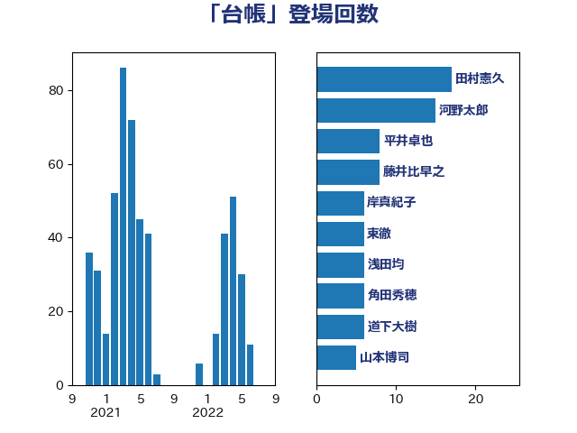

単語「台帳」

| 田村憲久 | 自由民主党 | 17 回 |
| 河野太郎 | 自由民主党 | 15 回 |
| 平井卓也 | 自由民主党 | 8 回 |
| 藤井比早之 | 自由民主党 | 8 回 |
| 岸真紀子 | 立憲民主党 | 6 回 |
| 東徹 | 日本維新の会 | 6 回 |
| 浅田均 | 日本維新の会 | 6 回 |
| 角田秀穂 | 公明党 | 6 回 |
| 道下大樹 | 立憲民主党 | 6 回 |
| 山本博司 | 公明党 | 5 回 |
| 斉藤鉄夫 | 公明党 | 5 回 |
| 田島麻衣子 | 立憲民主党 | 5 回 |
| 矢倉克夫 | 公明党 | 5 回 |
| 石川博崇 | 公明党 | 5 回 |
| こやり隆史 | 自由民主党 | 4 回 |
| 伊藤孝恵 | 国民民主党 | 4 回 |
| 岡本あき子 | 立憲民主党 | 4 回 |
| 野田聖子 | 自由民主党 | 4 回 |
| 阿部知子 | 立憲民主党 | 4 回 |
| おおつき紅葉 | 立憲民主党 | 3 回 |
| 上川陽子 | 自由民主党 | 3 回 |
| 佐藤正久 | 自由民主党 | 3 回 |
| 山田太郎 | 自由民主党 | 3 回 |
| 岸田文雄 | 自由民主党 | 3 回 |
| 川合孝典 | 国民民主党 | 3 回 |
| 梶山弘志 | 自由民主党 | 3 回 |
| 玉木雄一郎 | 国民民主党 | 3 回 |
| 石橋通宏 | 立憲民主党 | 3 回 |
| 福田昭夫 | 立憲民主党 | 3 回 |
| 篠原豪 | 立憲民主党 | 3 回 |
| 藤岡隆雄 | 立憲民主党 | 3 回 |
| 逢坂誠二 | 立憲民主党 | 3 回 |
| 金子恭之 | 自由民主党 | 3 回 |
| 鈴木俊一 | 自由民主党 | 3 回 |
| 長坂康正 | 自由民主党 | 3 回 |
| 階猛 | 立憲民主党 | 3 回 |
| 高橋英明 | 日本維新の会 | 3 回 |
| 黄川田仁志 | 自由民主党 | 3 回 |
| 古賀友一郎 | 自由民主党 | 2 回 |
| 平木大作 | 公明党 | 2 回 |
| 柴田巧 | 日本維新の会 | 2 回 |
| 田村貴昭 | 日本共産党 | 2 回 |
| 田畑裕明 | 自由民主党 | 2 回 |
| 美延映夫 | 日本維新の会 | 2 回 |
| 芳賀道也 | 国民民主党 | 2 回 |
| 萩生田光一 | 自由民主党 | 2 回 |
| 西村康稔 | 自由民主党 | 2 回 |
| 西村智奈美 | 立憲民主党 | 2 回 |
| 足立康史 | 日本維新の会 | 2 回 |
| 長妻昭 | 立憲民主党 | 2 回 |
| 青山繁晴 | 自由民主党 | 2 回 |
| 高木啓 | 自由民主党 | 2 回 |
| 三原じゅん子 | 自由民主党 | 1 回 |
| 三木亨 | 自由民主党 | 1 回 |
| 下野六太 | 公明党 | 1 回 |
| 中川宏昌 | 公明党 | 1 回 |
| 中谷一馬 | 立憲民主党 | 1 回 |
| 住吉寛紀 | 日本維新の会 | 1 回 |
| 佐藤英道 | 公明党 | 1 回 |
| 加藤勝信 | 自由民主党 | 1 回 |
| 古川禎久 | 自由民主党 | 1 回 |
| 吉田統彦 | 立憲民主党 | 1 回 |
| 塩川鉄也 | 日本共産党 | 1 回 |
| 塩田博昭 | 公明党 | 1 回 |
| 大口善徳 | 公明党 | 1 回 |
| 大島敦 | 立憲民主党 | 1 回 |
| 宮崎政久 | 自由民主党 | 1 回 |
| 宮崎雅夫 | 自由民主党 | 1 回 |
| 宮路拓馬 | 自由民主党 | 1 回 |
| 小宮山泰子 | 立憲民主党 | 1 回 |
| 小林史明 | 自由民主党 | 1 回 |
| 山岸一生 | 立憲民主党 | 1 回 |
| 山添拓 | 日本共産党 | 1 回 |
| 岩渕友 | 日本共産党 | 1 回 |
| 岩谷良平 | 日本維新の会 | 1 回 |
| 岸信夫 | 自由民主党 | 1 回 |
| 川田龍平 | 立憲民主党 | 1 回 |
| 庄子賢一 | 公明党 | 1 回 |
| 後藤祐一 | 立憲民主党 | 1 回 |
| 本田顕子 | 自由民主党 | 1 回 |
| 梅村聡 | 日本維新の会 | 1 回 |
| 櫻井周 | 立憲民主党 | 1 回 |
| 武田良太 | 自由民主党 | 1 回 |
| 武見敬三 | 自由民主党 | 1 回 |
| 浜田聡 | NHK党 | 1 回 |
| 清水貴之 | 日本維新の会 | 1 回 |
| 片山大介 | 日本維新の会 | 1 回 |
| 田村智子 | 日本共産党 | 1 回 |
| 石井啓一 | 公明党 | 1 回 |
| 石川香織 | 立憲民主党 | 1 回 |
| 神津たけし | 立憲民主党 | 1 回 |
| 神田憲次 | 自由民主党 | 1 回 |
| 福重隆浩 | 公明党 | 1 回 |
| 竹内譲 | 公明党 | 1 回 |
| 笠井亮 | 日本共産党 | 1 回 |
| 舟山康江 | 国民民主党 | 1 回 |
| 若宮健嗣 | 自由民主党 | 1 回 |
| 谷合正明 | 公明党 | 1 回 |
| 赤嶺政賢 | 日本共産党 | 1 回 |
| 進藤金日子 | 自由民主党 | 1 回 |
| 重徳和彦 | 立憲民主党 | 1 回 |
| 高木かおり | 日本維新の会 | 1 回 |
| 高良鉄美 | 無所属 | 1 回 |